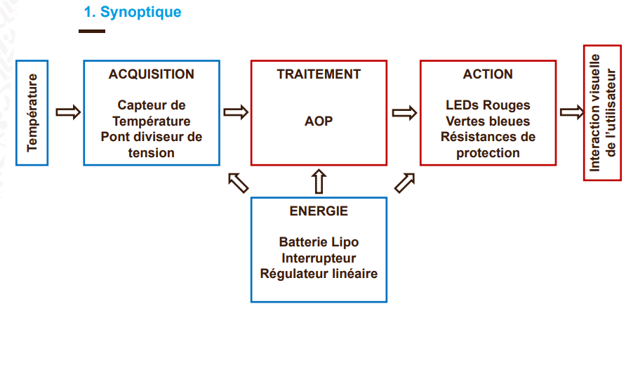

Système de mesure de température.
Pour répondre aux exigences du thermomètre, nous avons utilisé une approche fonctionnelle basée sur un synoptique à 4 blocs : Acquisition, Traitement, Action et Énergie.
Ce synoptique permet de structurer la recherche de solutions techniques (électroniques et informatiques) pour chaque fonction.

Synoptique utilisé pour la conception du Thermomètre